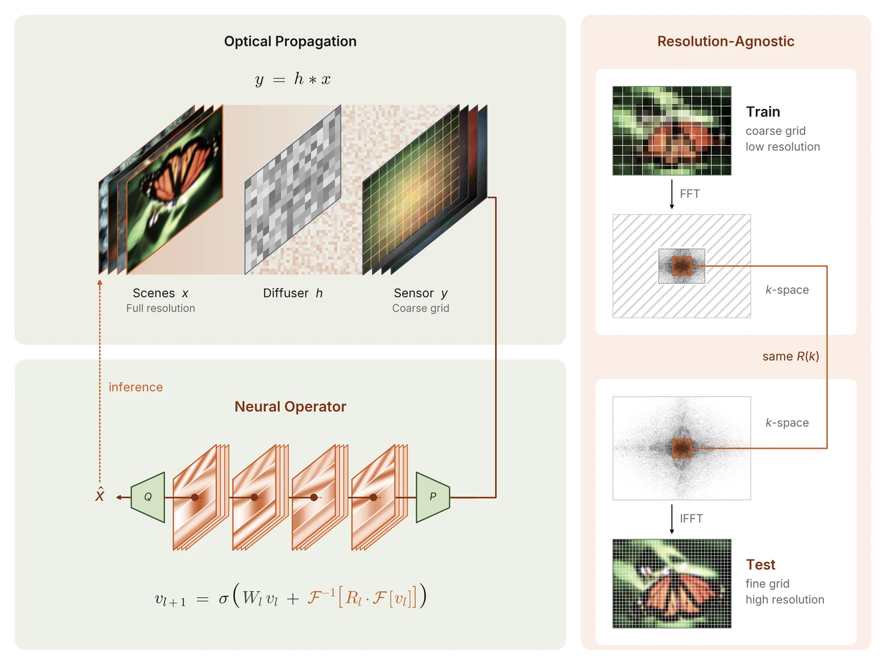
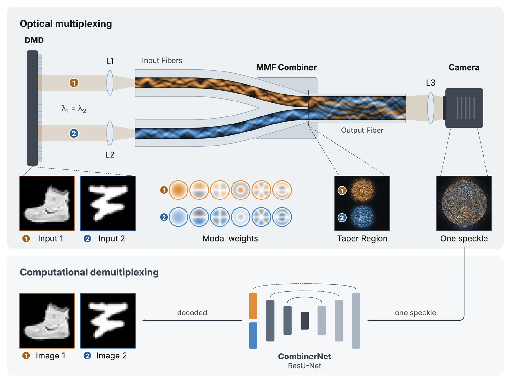

Holographic gradients through disorder
An off-axis holography setup measures the full complex field in a single shot. We use that measurement to compute gradients and train wavefronts in situ through scattering media.
M.S. Student, Biomedical Sciences and Engineering
Koç University, İstanbul
I am an M.S. student in Biomedical Sciences and Engineering at Koç University, advised by Asst. Prof. Uğur Teğin in the Laboratory of Photonic Technologies. I work on computational imaging: building optical systems together with the algorithms that recover images from them. My recent work covers lensless imaging with neural operators, holographic wavefront training through scattering media, and imaging through multimode fibers. I am supported by the TÜBİTAK 2232 Graduate Project Scholarship.
Previously, I received my B.S. in Physics from Middle East Technical University (METU), where I was advised by Prof. Alpan Bek and worked in the Environmental Photonics Lab on deep compressive microendoscopy through multimode fibers.
Interests Computational imaging · lensless and holographic imaging · physics-informed deep learning and neural operators for inverse problems · compressed sensing · wavefront shaping and imaging through scattering media · optical computing
An off-axis holography setup measures the full complex field in a single shot. We use that measurement to compute gradients and train wavefronts in situ through scattering media.

Lensless cameras replace the lens with a thin mask and recover the image computationally. We use Fourier neural operators for this reconstruction, so the model is not tied to a single image resolution.

A multimode fiber combiner mixes two input images into a single speckle pattern. A neural network (CombinerNet) recovers both images from that one measurement, so several channels share a single fiber and camera. Ongoing work brings deep learning and compressed sensing to fiber and SPAD-based imaging.